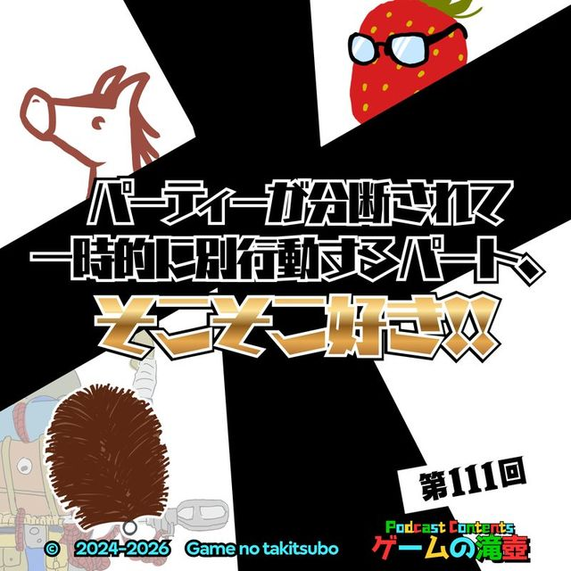

ポケットモンスター スカーレット・バイオレット
ポッドキャスト「ゲームの滝壺」で「ポケットモンスター スカーレット・バイオレット」が話題に出た回の一覧です。
滝壺での登場 2回トークの中でたびたび話題に出ているタイトルです。

#1112026.06.24💬 トーク内で登場 パーティーが分断されて一時的に別行動するパート、そこそこ好き！！ 滝壺メンバーがバラバラになってしまいました……。 なのでマルチ要素のあるゲームをひとりで遊んだ思い出について話します。ひとりで。 #552025.06.11💬 トーク内で登場
今話すなら当然スイッチの話！ マリオ、ポケモン、ドラクエ…に登場するスイッチを語る！！
スイッチの話をしております！！
#552025.06.11💬 トーク内で登場
今話すなら当然スイッチの話！ マリオ、ポケモン、ドラクエ…に登場するスイッチを語る！！
スイッチの話をしております！！
SAME SERIES同シリーズのタイトル
TALKED TOGETHER同じ回で話題に出たタイトル
🎧 ▶付きの時刻を押すと、その話題の頭からその場で再生できます。
「ポケットモンスター スカーレット・バイオレット」の話がもっと聴きたくなったら、おたよりでリクエストしてもらえると番組が喜びます。